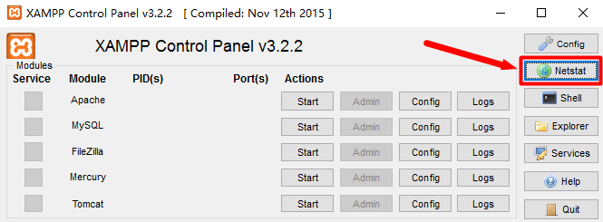

XAMPP错误：Apache shutdown unexpectedly解决办法：更改端口
如果你新安装的XAMPP遇到apache不能启动的情况，提示如下错误信息：
[Apache] Error: Apache shutdown unexpectedly.
[Apache] This may be due to a blocked port, missing dependencies,
[Apache] improper privileges, a crash, or a shutdown by another method.
[Apache] Press the Logs button to view error logs and check
[Apache] the Windows Event Viewer for more clues
[Apache] If you need more help, copy and post this
[Apache] entire log window on the forums
关键信息在第二句：这可能是一个堵塞的端口，缺少了依赖关系。apache启动需要80端口和443端口，如果被占用将发生错误，可以通过XAMPP控制面板右侧栏的Netstat按钮查看主机的端口使用情况。

想要解决这个问题的方法是简单的。只要更改apache的配置文件中所需使用的被占用的端口80或者443为其它端口，80端口的配置文件为httpd.conf，443端口的配置文件为httpd-ssl.conf，找到语句Listen，后面的数字即为对应端口号。（这里省略相应配置文件路径的内容，网络上相关内容很丰富了）
注：
1.可能在配置文件中会找到多个80或者443的字样，只需更改Listen后面的数字就可以了。
2.端口号可以随意定义，但是要注意端口号最大值为65000，不要超过这个数字，比如将80端口改为8080是合法的，但把443改为443443就是非法的，可以使用444等端口数值。